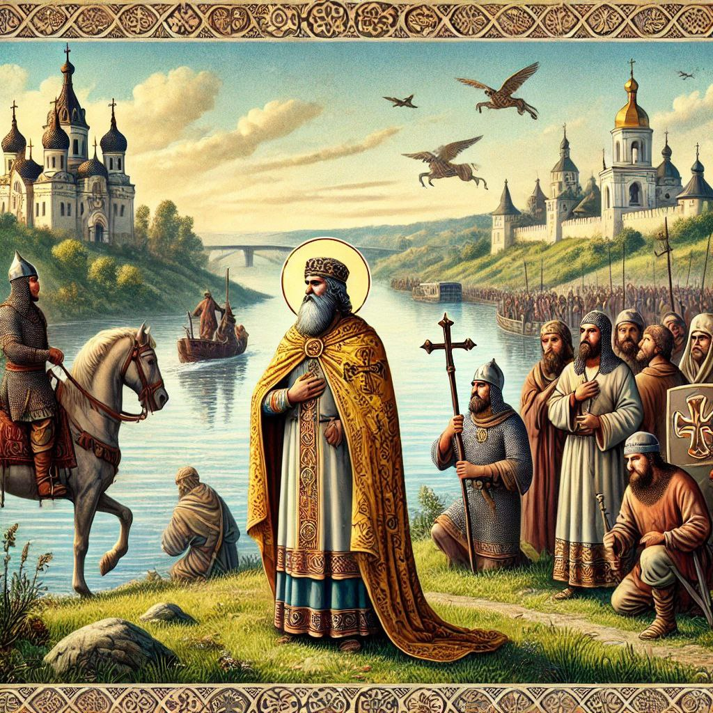
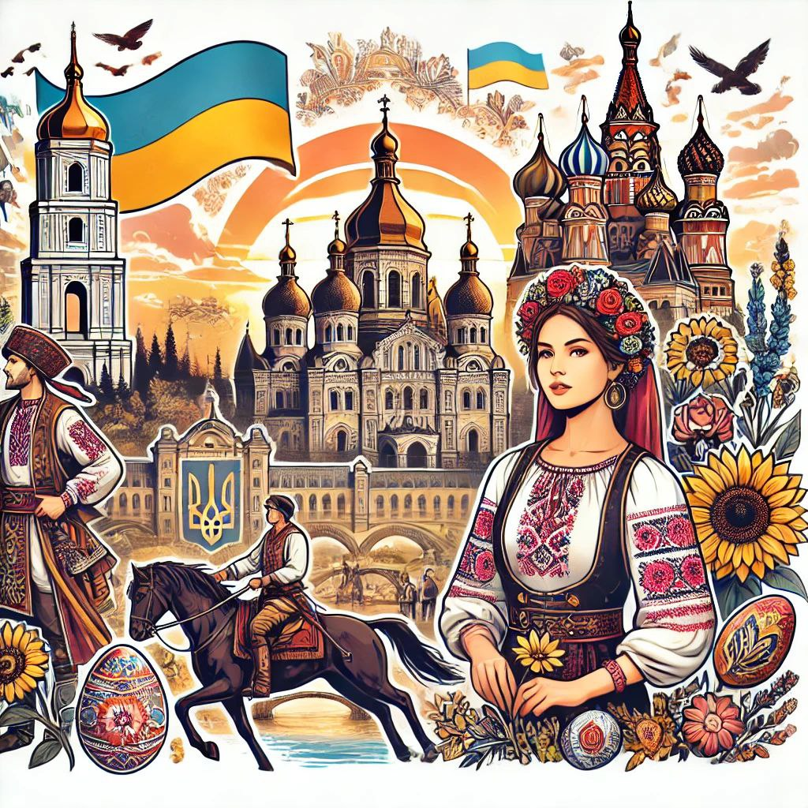
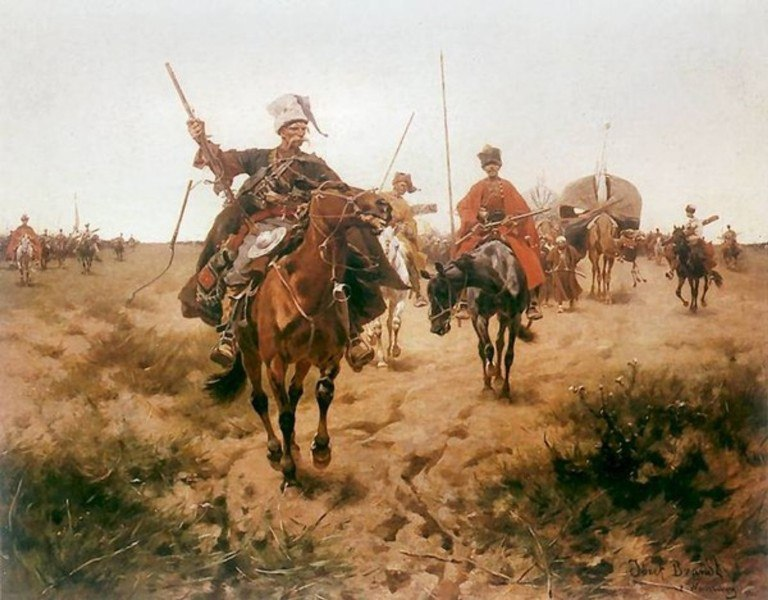

Історія України
Україна — це країна з багатою і древньою історією, яка сягає часів Київської Русі, коли вона була центром одного з найбільших і найсильніших середньовічних держав Східної Європи. Однак історія країни почалася набагато раніше, адже на території сучасної України існували трипільці, одна з найдавніших землеробських культур у світі.
Територію України первісні люди почали заселяти з давніх-давен (перші сліди датуються близько 1 млн років до н. е.), після чого вже її не полишали навіть в часи найбільшого просування льодовиків на південь. Територія країни належить до найперших вогнищ цивілізації та містобудування, вона входить до первісного ареалу приручення коня, винаходу колеса та освоєння перших металів людством. Різні хвилі міграції індоєвропейців до Європи та пізніші в зворотному напрямку склали підґрунтя різнобарвної картини її населення.
Поділ території на великі природні лісову й степову смуги зумовив різні форми господарювання й заклав характер подальших історичних процесів, в яких степ український завжди залишався невід'ємною складовою загальноєвразійських історичних і етноміграційних процесів у Великому степу. Грецька колонізація морського узбережжя увібрала територію України до орбіти античної цивілізації як її північний фронтир. Велике переселення народів першої половини першого тисячоліття н. е. підживило процеси державотворення у слов'янських племен, у яких на Східноєвропейській рівнині постала потужна середньовічна держава Київська Русь. Подальші процеси феодального дроблення відкинули окремі її частини на різні орбіти європейського та євразійського світів (Золота Орда).
Одним із ключових моментів в історії України було прийняття християнства в 988 році князем Володимиром Великим. Це об’єднало різні народи та зміцнило Київську Русь, а також стало важливим кроком у розвитку української культури та духовності.
Якщо говорити про культуру, важливо згадати традиційне мистецтво — вишиванку, яка є національним символом України. Кожен регіон має свій стиль і орнамент. Вишиванки відрізняються кольорами та символами, що несе в собі магічні та оберегові значення.
Також варто згадати козацтво — унікальне військове братство, яке було не тільки захисниками, а й носіями української ідентичності. Запорізька Січ, створена козаками, стала символом волі й незалежності.
Утворення та становлення
Перша достеменна згадка про русів датується 839 роком у франкській хроніці «Бертинські аннали», де написано, що русами себе називали представники посольства, яке прибуло з півночі до Візантійської імперії.
Вдруге гучно руси заявили про себе у 860 році, коли здійснили морський похід на Царгород, розграбували передмістя столиці і безперешкодно відпливли — так описали події очевидці-греки.
Найдавніше джерело про історію Середнього Подніпров'я, що було написано не раніше ХІ ст., Повість временних літ, у своїй «легендарній» частині розповідає про цей похід русів і про утворення держави зі столицею у Києві у др. пол. ІХ ст. Зокрема, повість вказує імена очільників походу на Царгород — Аскольд і Дір, та називає їх дружинниками скандинавської династії Рюриковичів. Представник цієї династії Віщий Олег, начебто, прийшов у Київ з Новгороду у 882 році, вбив Аскольда і Діра та став правити Київською державою. Ця розповідь містять низку помилок (наприклад, неправильно датується рік походу на Царгород — 867) і не узгоджується з археологічними дослідженнями, які підтверджують виникнення Новгороду лише у Х ст. Тому сучасні історики вважають, що оповіді про ІХ ст, які подаються у літописі, є дуже сумнівними і сконструйованими автором повісті.
Процеси державотворення на Середньому Подніпров'ї дослідники пов'язують з появою відомого торгового шляху зі Скандинавії до Константинополя, що отримав назву «шлях із варягів у греки». Значна частина цього шляху проходила Дніпром, а Київ був важливим перевалочним пунктом, що дозволяв контролювати торгівлю річками Дніпром, Прип'яттю та Десною, а також місцем, де подорожні нормани зупинялися на деякий час для поповнення запасів. На чолі з норманами навколо Києва у кін. ІХ ст. починає формуватися новий союз племен, ядром якого стали поляни. Зокрема, у грецьких джерелах згадується Русько-візантійський договір 911 року, який підтверджує існування держави вікінгів на схилах Дніпра.
З пер. пол. Х ст. відомий перший підтверджений з іноземних джерел правитель Київської держави — Ігор Старий, якого Повість временних літ називає князем. Літописні відомості про устрій держави тих часів вже вважаються більш достовірними. Значне місце в управлінні тоді займала князівська дружина, з якою правителі ходили в походи та займалися збиранням данини з підкорених місцевих слов'янських племен. Отримана данина (хутро, мед, шкіри, віск, раби) йшла на експорт переважно у Візантію, а виручені кошти витрачалися на купівлю зброї, предметів розкоші, вина, що складали основу імпорту. Коли умови торгівлі вже не влаштовували князя, він здійснив невдалий похід на Царгород у 941, в наслідок якого було укладено новий Русько-візантійський торговий договір у 944 році. Повість временних літ розповідає про намагання Ігорем отримати більше данини з підкорених слов'ян, в наслідок чого повстали деревляни і вбили його у 944 або 945 році.
Ольга, вдова Ігоря, жорстоко помстилася за смерть чоловіка. Вона провела податкову реформу, яка впорядкувала збір данини й запровадила погости (місця її збору); заснувала дипломатичні відносини з німецьким імператором, Папою Римським, Візантією та прийняла християнство. Київське князівство Ольга передала 964 року Святославу (сину Ігоря), який був войовничим язичником, провів майже все життя в походах — останній «справжній варяг» на княжому престолі. Він підкорив в'ятичів, ясів і касогів і розгромив Хозарський каганат, державне утворення хозарів на сході; вів успішні війни з болгарами та Візантією, навіть хотів перенести столицю власної держави до Переяславця. Але 971 року потрапив в облогу у фортеці Доростол, через що йому довелося повернути завойовані землі та повернутися до Києва. Дорогою, біля дніпровських порогів, його вбили печеніги, що були у змові з імператором. Розділ Святославом Русі між трьома своїми синами (Ярополком, Олегом та Володимиром) призвів до першої міжусобиці по його смерті, з якої переможцем вийшов Володимир.
Мистецтво та традиції
Українська культура багата на мистецькі традиції. Від глибоких фольклорних мотивів до сучасного мистецтва. Народні пісні, танці (як, наприклад, гопак), і легенди передаються з покоління в покоління.
Література теж відіграє значну роль у культурі. Видатні українські письменники, такі як Тарас Шевченко та Леся Українка, стали не лише поетами, але й символами боротьби за національну свободу. Їхня творчість живе і нині, надихаючи людей.
Сучасна Україна
Сьогодні Україна є незалежною державою з багатою культурою, талановитими митцями і розвинутою наукоюs
Після здобуття незалежності у 1991 році, український народ пройшов складний шлях, проте зміг відстояти свою мову, культуру і самобутність.
Й продовжує відстоювати незалежність до сьогодення